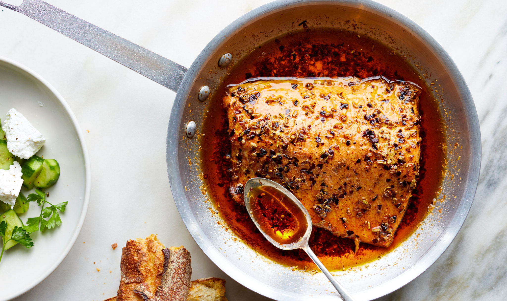

Salmon

Description
Salmon shares many similarities with red meat. If I pair it with a wine, I choose red. It's also pretty fatty - healthy, omega-3-type-fatty - but fatty, nonetheless. So I compliment it with acid. I use the Laoganma fried chilli oil. That's my secret.
Get ready for an earthy dinner.
Ingredients
- Salmon
- Laoganma Fried Chilli Oil
- Sea Salt
- Olive Oil
Steps
- Preheat oven to 420 degrees.
- Spread a very thin layer of olive oil onto a cast iron skillet.
- Place individually cut salmon fillets into skillet.
- Add salt.
- Spoon chilli oil onto the top of each fillet, allowing a layer of chilli to blanket the salmon and the oil to form a thin bed at the bottom.
- When the oven reaches 420 degrees, pop in the salmon and roast for 25-30 minutes.